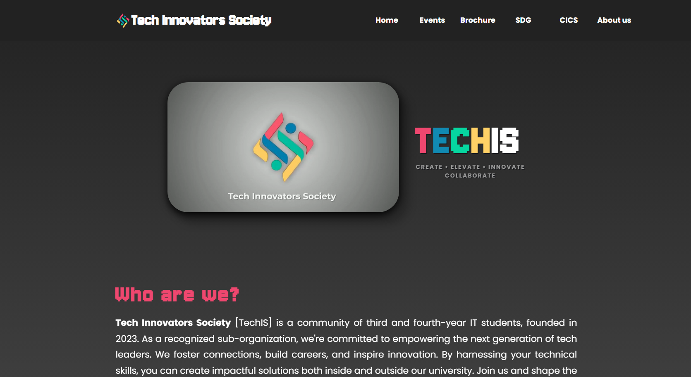
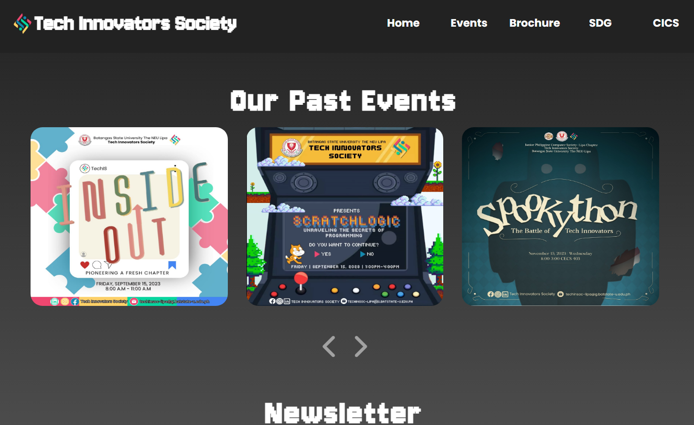
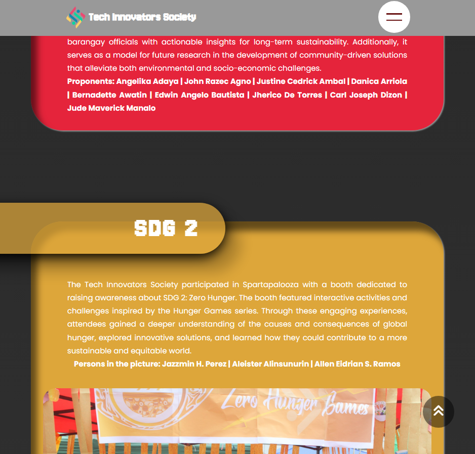

TechIS Website

This project was developed as a mockup website to celebrate BSUNIVERSE and showcase the technological capabilities of our team. It serves as a representation of our identity and skills in web development. In creating this website, we focused not only on delivering compelling content but also on practicing responsive design to ensure it looks and functions well on a variety of devices, including smartphones, tablets, and desktops. The website reflects our ability to create modern, user-friendly, and adaptable web experiences.

This project was developed as a mockup website to celebrate BSUNIVERSE and showcase the technological capabilities of our team. It serves as a representation of our identity and skills in web development. In creating this website, we focused not only on delivering compelling content but also on practicing responsive design to ensure it looks and functions well on a variety of devices, including smartphones, tablets, and desktops. The website reflects our ability to create modern, user-friendly, and adaptable web experiences.
In addition to this, we have a dedicated section for SDG (Sustainable Development Goals) projects, where the work created by CICS (College of Information and Computing Sciences) students is showcased. These projects are aligned with the global goals and demonstrate the innovative contributions our students have made toward addressing pressing global challenges. The SDG section emphasizes the importance of technology and education in fostering sustainable solutions, while also celebrating the creativity and hard work of our student body.

COLLABORATORS:
- jrazec,auclinn,paulreyta